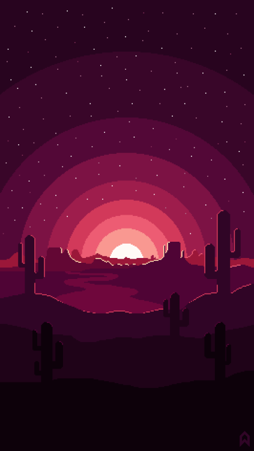
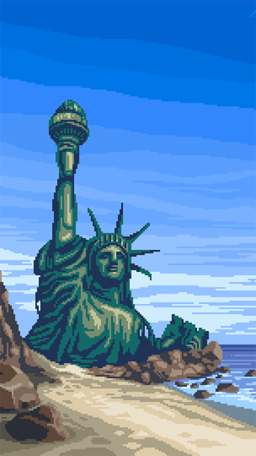
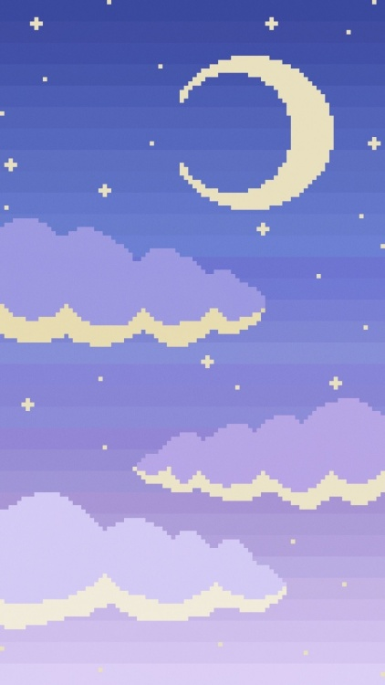
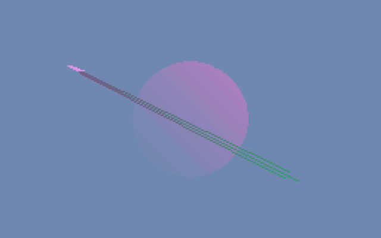
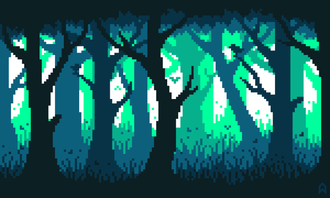

Brutalism, Minimalism, Vaporwave, Retro, Futuristic... There’s so many design styles out there it can be tough to stay on top of them all!
Here at How About This Design? we help you choose your next great design by showing you real-world examples of various different design styles. Choose a style from the menu below, and watch this site morph right before your eyes!
The content of the site stays mostly the same, it just shifts around, changes palettes, and gets a bit aesthetically funky.
At the bottom of this page are examples from various categories (product design, banners, merch, etc.) that showcase a more specific breakdown of your chosen style.
We hope you find this useful!
Pixel art is a form of digital art, created through the use of software, where images are edited on the pixel level.
The aesthetic for this kind of graphics comes from 8-bit and 16-bit computers and video game consoles, in addition to
other limited systems such as graphing calculators. In most pixel art, the color palette used is extremely limited in
size, with some pixel art using only two colors.
Creating or modifying pixel art characters or objects for video games is sometimes called spriting, a term that arose
from the hobbyist community. The term likely came from the term sprite, a term used in computer graphics to describe a
two-dimensional bitmap that is used in tandem with other bitmaps to construct a larger scene.
Although the definition of the medium is not concrete, the majority of pixel artists agree that an image can be
categorized as pixel art when the artist is manipulating the image with deliberate control over the placement of
each individual pixel. When purposefully editing in this way, changing the position of a few pixels can have a
drastic effect on the image. Most pixel artists do not consider images that have had filters applied to them which
cause the image to look pixellated to be the same as pixel art, as the pixels that make up the image were not
consciously placed by the artist, and usually do not hold much importance to the bigger picture.
|  |  |  |
| source | source | source |
|  |  |
| source | source |